Hola, ¿qué hai tra-la cancela verde?
A Cancela Verde é unha explotación agraria (no CRAEGA)
que está mesmiño nun lugar da Coruña (CTV)
onde sempre se traballou a terra.
Polo de agora témola pechada...
...pronto abrirá.
Nembargantes amosámosvos algo do que xa hai tras dela :-)
Ir a DuckDuckGoO que a terra nos da a comer....
- Leituga lisa, ¡tenra!
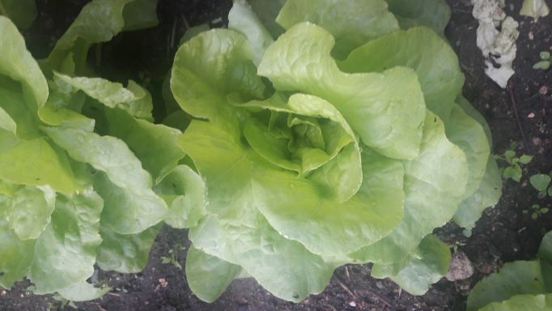
volta ó Inicio - Leituga riza, ¡saborosa!
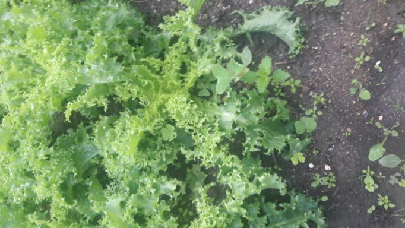
volta ó Inicio - Fresas, ¡doces!
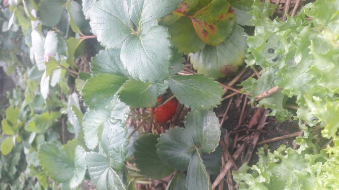
volta ó Inicio - Frambuesas, ¡recién!
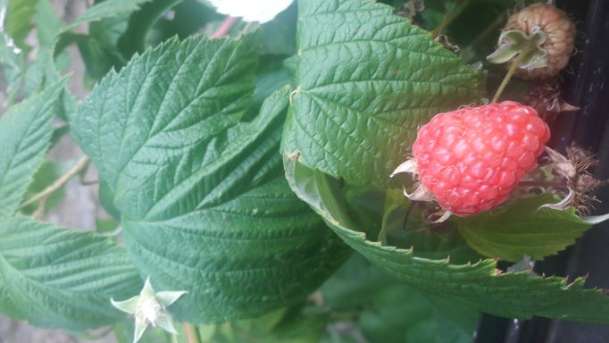
volta ó Inicio - Laranxas, ¡han vir!
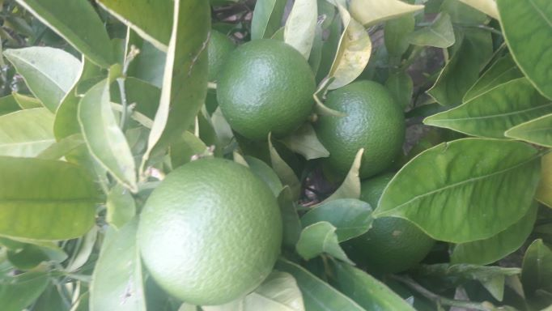
volta ó Inicio - Kiwis, ¡medrando!
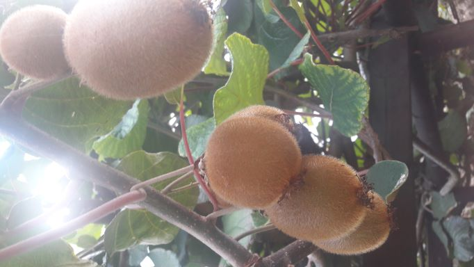
volta ó Inicio - Cherry pera, ¡caramelos!
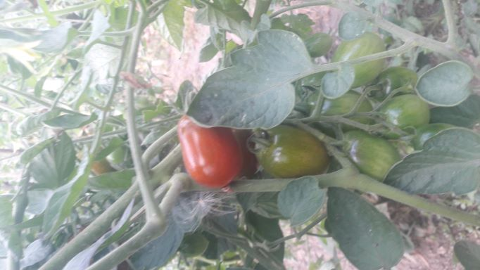
volta ó Inicio - Cherry azul, ¡carne e sabor!
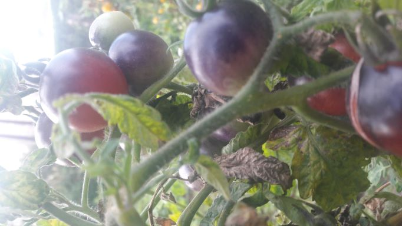
volta ó Inicio - Cherry marelo, ¡contraste!
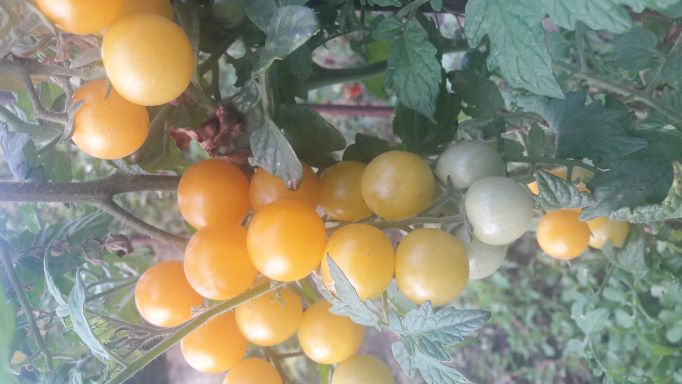
volta ó Inicio - Remolacha, ¡doce!
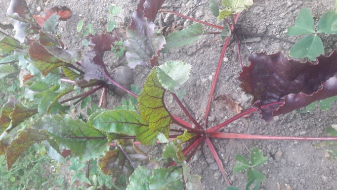
volta ó Inicio - Pimento, ¡qué boa pinta!
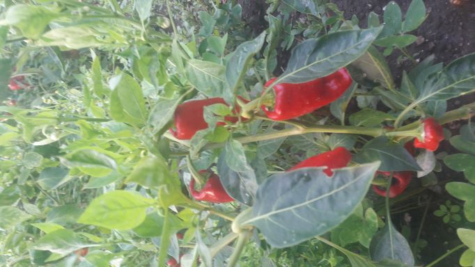
volta ó Inicio - Repolo liso, ¡pequeno e suave!
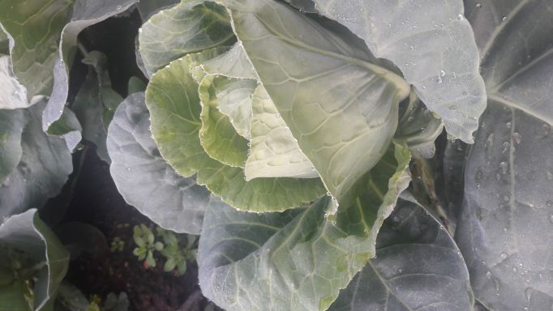
volta ó Inicio - Repolo rizo, ¡o de sempre!
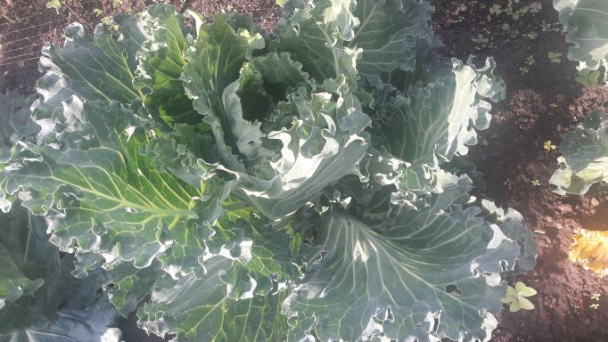
volta ó Inicio - Espinacas e acelgas, ¡para cocelas!
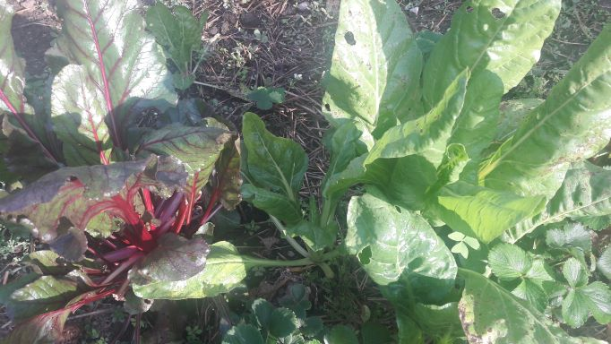
volta ó Inicio - Limón, ¡perfecto todo o ano!
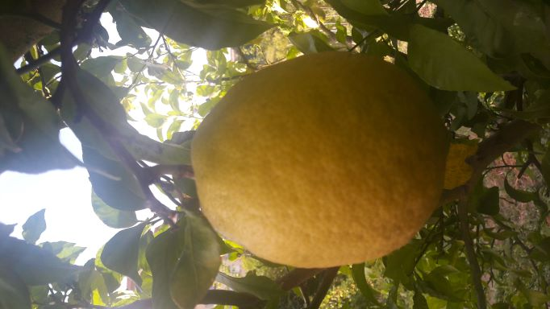
volta ó Inicio - Mazá reineta, ¡chea de sabor!
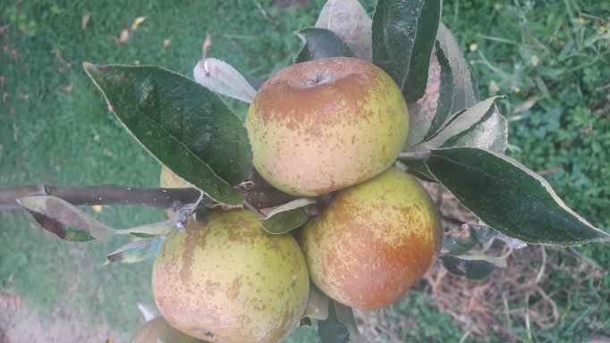
volta ó Inicio - Pimentos..., ¡uns pican e outros non!
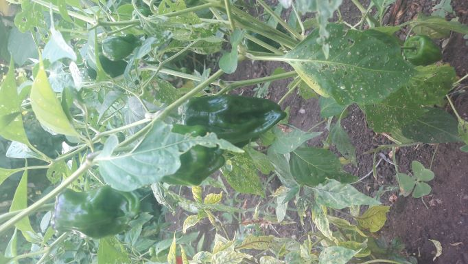
volta ó Inicio - Pataca do aire, ¡artista invitada!
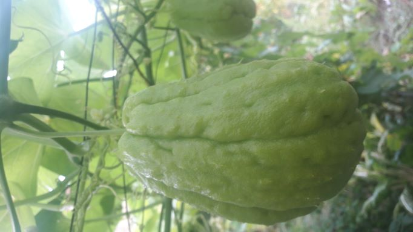
volta ó Inicio - Fabas, ¡madurando!
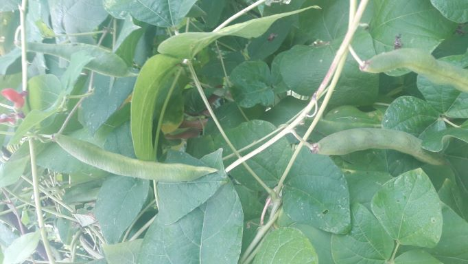
volta ó Inicio - Pimento verde, ¡que non falte no guiso!
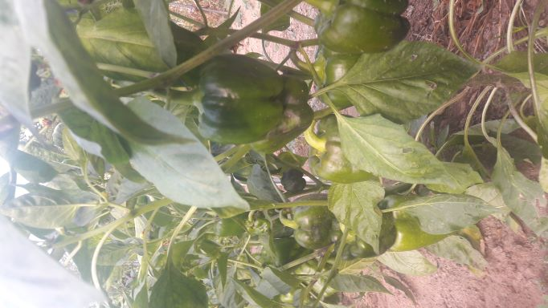
volta ó Inicio - Xudía marela, ¡a tenrura!
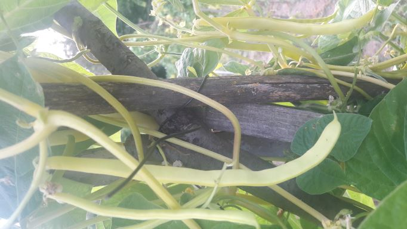
volta ó Inicio - Cabaza, ¡vindo estupendamente!
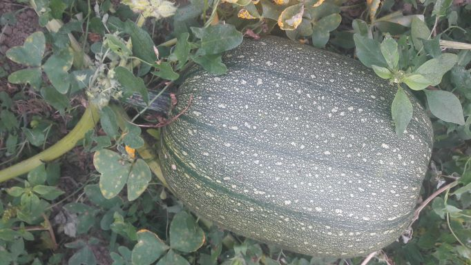
volta ó Inicio - Cabaza, ¡será coma mel!
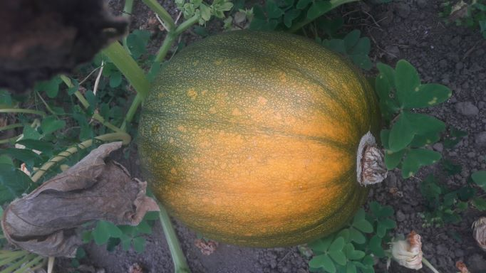
volta ó Inicio - Mazá golden, ¡a mellor!
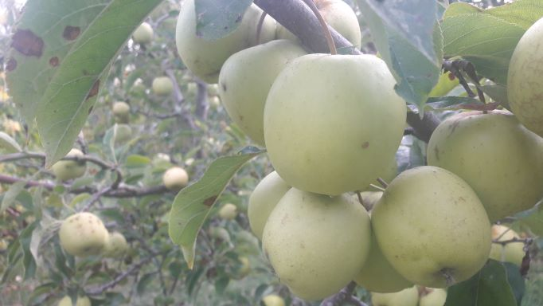
volta ó Inicio - Mazá granny smith, ¡a máis potente!

volta ó Inicio - Pexegos, ¡grandes!
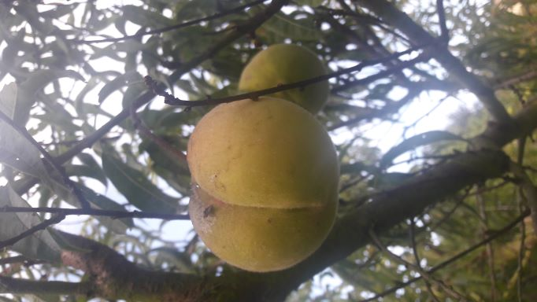
volta ó Inicio - Coles, ¡fan un caldo perfecto!
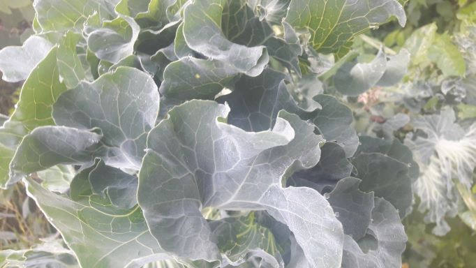
volta ó Inicio - Cabaza, ¡a de toda a vida!

volta ó Inicio - Tomates, ¡listos!
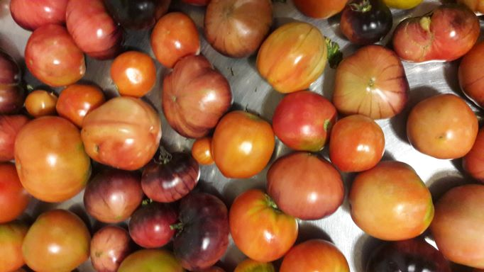
volta ó Inicio - Calabacíns, ¡no seu punto!
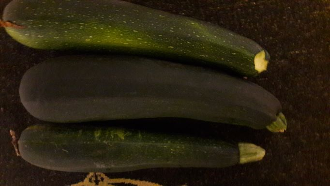
volta ó Inicio - Fabas, ¡verás que fabada fan!
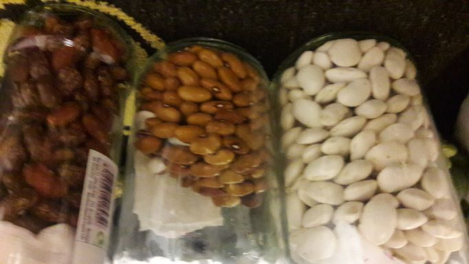
volta ó Inicio
...e os que xa foron apañados
máis cousiñas que non son de comer... algunhas moi lindas :)
- Aloe vera: unha folla, o mellor remedio

volta ó Inicio - cor e ledicia
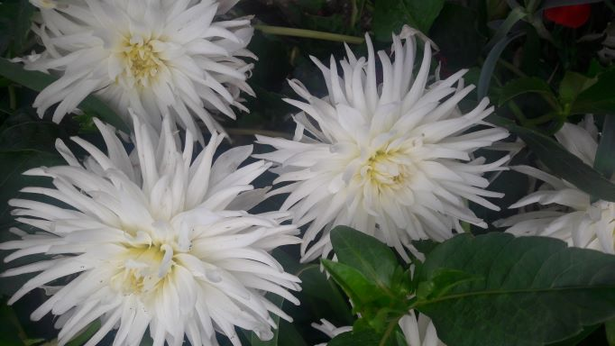
volta ó Inicio - cor e ledicia
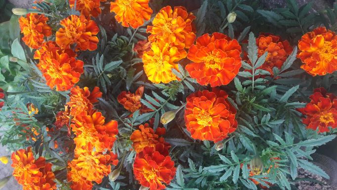
volta ó Inicio - cor e ledicia
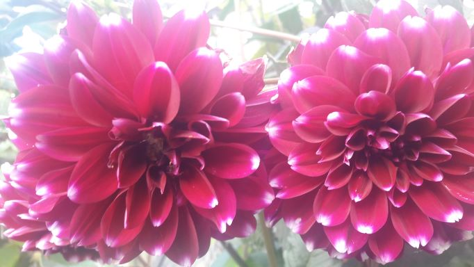
volta ó Inicio - cor e ledicia
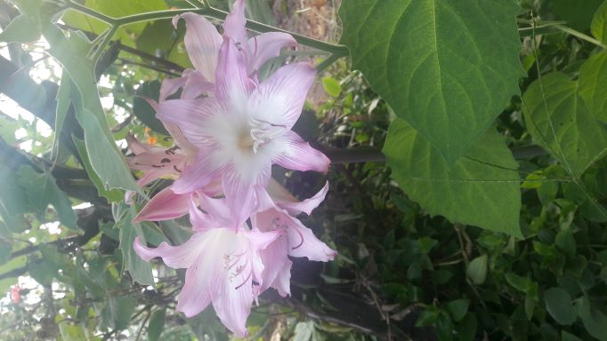
volta ó Inicio